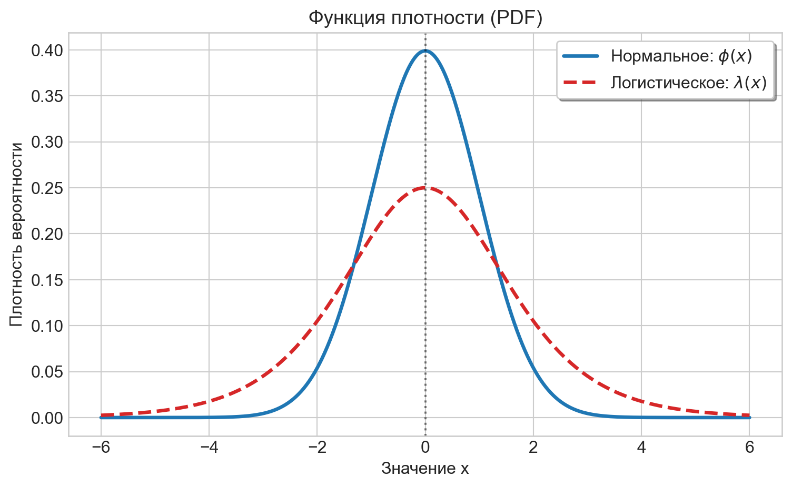
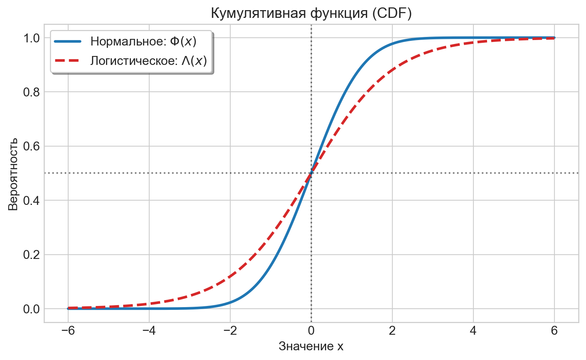
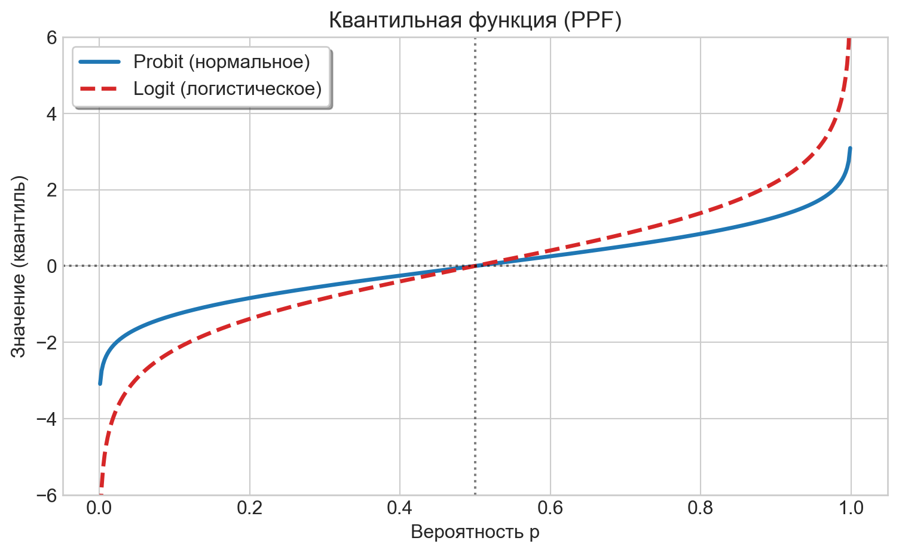

Задачи по Эконометрике-2: logit/probit-модель
1 Нормальное и логистическое распределения
Стандартное нормальное (гауссово) распределение \(N(0, 1)\)
Плотность вероятности: \[\phi(t) = \frac{1}{\sqrt{2\pi}} \exp\left(-\frac{t^2}{2}\right), \quad t \in \mathbb{R}\]
(Кумулятивная) функция распределения: \[\Phi(x) = \int\limits_{-\infty}^x \phi(t) \, dt, \quad x \in \mathbb{R}\]
Логистическое распределение
(Кумулятивная) функция распределения: \[\Lambda(x) = \frac{\exp(x)}{1 + \exp(x)}, \quad x \in \mathbb{R}\]
Плотность вероятности: \[\lambda(x) = \Lambda'(x) = \frac{\exp(x)}{(1 + \exp(x))^2}, \quad x \in \mathbb{R}\]
Плотности на одном графике
Функции распределения на одном графике

Обратные функции распределения
\[ logit(p)=\Lambda^{-1}(p)=\log\frac{p}{1-p} \quad \text{ и } \quad probit(p)=\Phi^{-1}(p), \quad 0<p<1 \]
Их графики

2 Оценивание и интерпретация коэффициентов
2.1 approve equation #1 (probit)
Для датасета loanapp рассмотрим probit-регрессию approve на appinc, mortno, unem, dep, male, married, yjob, self
Спецификация:
\[ P(approve=1)=\Phi(\beta_0+\beta_1appinc+\beta_2mortno+\beta_3unem+\beta_4dep+\beta_5male+\beta_6married+\beta_7yjob+\beta_8self) \]
Альтернативная спецификация:
\[ probit(P(approve=1))=\beta_0+\beta_1appinc+\beta_2mortno+\beta_3unem+\beta_4dep+\beta_5male+\beta_6married+\beta_7yjob+\beta_8self \]
Оцените модель на данных и укажите коэффициенты подогнанной модели. Ответ округлите до 3-х десятичных знаков.
Ответ:
| Переменная | Оценка (MLE) |
|---|---|
| Intercept | 1.142 |
| appinc | -0.001 |
| mortno | 0.407 |
| unem | -0.031 |
| dep | -0.083 |
| male | 0.02 |
| married | 0.221 |
| yjob | -0.001 |
| self | -0.158 |
Дайте интерпретацию коэффициентам модели.
2.2 approve equation #2 (logit)
Для датасета loanapp рассмотрим logit-регрессию approve на appinc, mortno, unem, dep, male, married, yjob, self
Спецификация:
\[ P(approve=1)=\Lambda(\beta_0+\beta_1appinc+\beta_2mortno+\beta_3unem+\beta_4dep+\beta_5male+\beta_6married+\beta_7yjob+\beta_8self) \]
Альтернативная спецификация:
\[ logit(P(approve=1))=\beta_0+\beta_1appinc+\beta_2mortno+\beta_3unem+\beta_4dep+\beta_5male+\beta_6married+\beta_7yjob+\beta_8self \]
Здесь
\[ logit(P(approve=1)) = \log\frac{P(approve=1)}{1-P(approve=1)} = \log\frac{P(approve=1)}{P(approve=0)} \]
Оцените модель на данных и укажите коэффициенты подогнанной модели. Ответ округлите до 3-х десятичных знаков.
Ответ:
| Переменная | Оценка (MLE) |
|---|---|
| Intercept | 1.931 |
| appinc | -0.001 |
| mortno | 0.787 |
| unem | -0.055 |
| dep | -0.161 |
| male | 0.03 |
| married | 0.425 |
| yjob | -0.006 |
| self | -0.28 |
Дайте интерпретацию коэффициентам модели.
2.3 labour force equation #1 (probit)
Для датасета TableF5-1 рассмотрим probit-регрессию LFP на WA, I(WA ** 2), WE, KL6, K618, CIT, UN, np.log(FAMINC)
Спецификация:
\[ P(LFP=1)=\Phi(\beta_0+\beta_1WA+\beta_2WA^2+\beta_3WE+\beta_4KL6+\beta_5K618+\beta_6CIT+\beta_7UN+\beta_8\log(FAMINC)) \]
Альтернативная спецификация:
\[ probit(P(LFP=1))=\beta_0+\beta_1WA+\beta_2WA^2+\beta_3WE+\beta_4KL6+\beta_5K618+\beta_6CIT+\beta_7UN+\beta_8\log(FAMINC) \]
Оцените модель на данных и укажите коэффициенты подогнанной модели. Ответ округлите до 3-х десятичных знаков.
Ответ:
| Переменная | Оценка (MLE) |
|---|---|
| Intercept | -2.005 |
| WA | 0.008 |
| I(WA ** 2) | -0.001 |
| WE | 0.109 |
| KL6 | -0.851 |
| K618 | -0.063 |
| CIT | -0.128 |
| UN | -0.011 |
| np.log(FAMINC) | 0.2 |
Дайте интерпретацию коэффициентам модели.
2.4 labour force equation #2 (logit)
Для датасета TableF5-1 рассмотрим logit-регрессию LFP на WA, I(WA ** 2), WE, KL6, K618, CIT, UN, np.log(FAMINC)
Спецификация:
\[ P(LFP=1)=\Lambda(\beta_0+\beta_1WA+\beta_2WA^2+\beta_3WE+\beta_4KL6+\beta_5K618+\beta_6CIT+\beta_7UN+\beta_8\log(FAMINC)) \]
Альтернативная спецификация:
\[ logit(LFP)=\beta_0+\beta_1WA+\beta_2WA^2+\beta_3WE+\beta_4KL6+\beta_5K618+\beta_6CIT+\beta_7UN+\beta_8\log(FAMINC) \]
Здесь
\[ logit(P(LFP=1)) = \log\frac{P(LFP=1)}{1-P(LFP=1)} = \log\frac{P(LFP=1)}{P(LFP=0)} \]
Оцените модель на данных и укажите коэффициенты подогнанной модели. Ответ округлите до 3-х десятичных знаков.
Ответ:
| Переменная | Оценка (MLE) |
|---|---|
| Intercept | -3.241 |
| WA | 0.007 |
| I(WA ** 2) | -0.001 |
| WE | 0.18 |
| KL6 | -1.414 |
| K618 | -0.104 |
| CIT | -0.217 |
| UN | -0.018 |
| np.log(FAMINC) | 0.333 |
Дайте интерпретацию коэффициентам модели.
3 z-test
3.1 approve equation #1 (probit)
Для датасета loanapp рассмотрим probit-регрессию approve на appinc, mortno, unem, dep, male, married, yjob, self
Подгоните модель на данных и приведите результаты \(z\)-теста
Ответ:
| Coef. | Std.Err. | z-value | p-value | Signif. | |
|---|---|---|---|---|---|
| Intercept | 1.1418 | 0.1086 | 10.5122 | 0 | |
| appinc | -0.0005 | 0.0004 | -1.3752 | 0.1691 | |
| mortno | 0.4071 | 0.0866 | 4.7026 | 0 | *** |
| unem | -0.0308 | 0.0161 | -1.9086 | 0.0563 | * |
| dep | -0.0828 | 0.0352 | -2.3546 | 0.0185 | ** |
| male | 0.02 | 0.0995 | 0.2009 | 0.8408 | |
| married | 0.2208 | 0.0865 | 2.5522 | 0.0107 | ** |
| yjob | -0.0007 | 0.0349 | -0.02 | 0.984 | |
| self | -0.1583 | 0.1067 | -1.4826 | 0.1382 |
Signif. codes: *** \(p<0.01\), ** \(p<0.05\), * \(p<0.1\)
Модель была подогнана по 1971 наблюдениям. Уровень значимости 10%
Вычислите необходимое критическое значение \(z\)-теста. Ответ округлите до 3-х десятичных знаков.
УведомлениеКритическое значение z-теста
\(z_{crit} = 1.645\)
Какие коэффициенты значимы?
УведомлениеКоэффициенты, значимые на уровне 10% (по классическим стандартным ошибкам)
mortno, unem, dep, married
3.2 approve equation #2 (logit)
Для датасета loanapp рассмотрим logit-регрессию approve на appinc, mortno, unem, dep, male, married, yjob, self
Подгоните модель на данных и приведите результаты \(z\)-теста
Ответ:
| Coef. | Std.Err. | z-value | p-value | Signif. | |
|---|---|---|---|---|---|
| Intercept | 1.9315 | 0.1993 | 9.6891 | 0 | |
| appinc | -0.001 | 0.0007 | -1.4717 | 0.1411 | |
| mortno | 0.7868 | 0.1721 | 4.5714 | 0 | *** |
| unem | -0.0549 | 0.0294 | -1.8661 | 0.062 | * |
| dep | -0.1608 | 0.0647 | -2.4861 | 0.0129 | ** |
| male | 0.03 | 0.1859 | 0.1612 | 0.8719 | |
| married | 0.4246 | 0.1624 | 2.6145 | 0.0089 | *** |
| yjob | -0.0065 | 0.0651 | -0.0993 | 0.9209 | |
| self | -0.2804 | 0.1967 | -1.4257 | 0.1539 |
Signif. codes: *** \(p<0.01\), ** \(p<0.05\), * \(p<0.1\)
Модель была подогнана по 1971 наблюдениям. Уровень значимости 5%
Вычислите необходимое критическое значение \(z\)-теста. Ответ округлите до 3-х десятичных знаков.
УведомлениеКритическое значение z-теста
\(z_{crit} = 1.960\)
Какие коэффициенты значимы?
УведомлениеКоэффициенты, значимые на уровне 5% (по классическим стандартным ошибкам)
mortno, dep, married
3.3 labour force equation #1 (probit)
Для датасета TableF5-1 рассмотрим probit-регрессию LFP на WA, I(WA ** 2), WE, KL6, K618, CIT, UN, np.log(FAMINC)
Подгоните модель на данных и приведите результаты z-теста
Ответ:
| Coef. | Std.Err. | z-value | p-value | Signif. | |
|---|---|---|---|---|---|
| Intercept | -2.0046 | 1.7055 | -1.1754 | 0.2398 | |
| WA | 0.0076 | 0.0703 | 0.1084 | 0.9137 | |
| I(WA ** 2) | -0.0005 | 0.0008 | -0.6538 | 0.5132 | |
| WE | 0.1088 | 0.0241 | 4.514 | 0 | *** |
| KL6 | -0.8513 | 0.1146 | -7.4277 | 0 | *** |
| K618 | -0.0632 | 0.0415 | -1.5206 | 0.1284 | |
| CIT | -0.1277 | 0.1074 | -1.1891 | 0.2344 | |
| UN | -0.0106 | 0.0157 | -0.6785 | 0.4975 | |
| np.log(FAMINC) | 0.1996 | 0.1046 | 1.9081 | 0.0564 | * |
Signif. codes: *** \(p<0.01\), ** \(p<0.05\), * \(p<0.1\)
Модель была подогнана по 753 наблюдениям. Уровень значимости 10%
Вычислите необходимое критическое значение \(z\)-теста. Ответ округлите до 3-х десятичных знаков.
УведомлениеКритическое значение z-теста
\(z_{crit} = 1.645\)
Какие коэффициенты значимы?
УведомлениеКоэффициенты, значимые на уровне 10% (по классическим стандартным ошибкам)
WE, KL6, np.log(FAMINC)
3.4 labour force equation #2 (logit)
Для датасета TableF5-1 рассмотрим logit-регрессию LFP на WA, I(WA ** 2), WE, KL6, K618, CIT, UN, np.log(FAMINC)
Подгоните модель на данных и приведите результаты \(z\)-теста
Ответ:
| Coef. | Std.Err. | z-value | p-value | Signif. | |
|---|---|---|---|---|---|
| Intercept | -3.2407 | 2.8337 | -1.1436 | 0.2528 | |
| WA | 0.007 | 0.1159 | 0.0602 | 0.952 | |
| I(WA ** 2) | -0.0008 | 0.0013 | -0.6061 | 0.5444 | |
| WE | 0.18 | 0.0404 | 4.4535 | 0 | *** |
| KL6 | -1.4138 | 0.1987 | -7.1152 | 0 | *** |
| K618 | -0.1042 | 0.0687 | -1.5166 | 0.1294 | |
| CIT | -0.2165 | 0.1765 | -1.2267 | 0.2199 | |
| UN | -0.0176 | 0.0258 | -0.6812 | 0.4957 | |
| np.log(FAMINC) | 0.3331 | 0.1729 | 1.9272 | 0.054 | * |
Signif. codes: *** \(p<0.01\), ** \(p<0.05\), * \(p<0.1\)
Модель была подогнана по 753 наблюдениям. Уровень значимости 5%
Вычислите необходимое критическое значение \(z\)-теста. Ответ округлите до 3-х десятичных знаков.
УведомлениеКритическое значение z-теста
\(z_{crit} = 1.960\)
Какие коэффициенты значимы?
УведомлениеКоэффициенты, значимые на уровне 5% (по классическим стандартным ошибкам)
WE, KL6
4 LR-тест: значимость регрессии
4.1 approve equation #1 (probit)
Для датасета loanapp рассмотрим probit-регрессию approve на appinc, unem, male, yjob, self
Подгоните модель на данных и укажите:
- число наблюдений, на которых была подогнана модель
- логарифм функции правдоподобия для модели \(\log L\)
- логарифм функции правдоподобия для регрессии без объясняющих переменных (только на константу)
Ответ округлите до 4-х десятичных знаков.
Ответ:
- число наблюдений: 1971
- логарифм функции правдоподобия: \(\log L = -733.7270\)
- логарифм функции правдоподобия для регрессии на константу: \(\log L_{null} = -737.9793\)
Тестируется значимость регрессии, т.е. гипотеза \(H_0:\beta_{appinc}=\beta_{unem}=\beta_{male}=\beta_{yjob}=\beta_{self}=0\). Уровень значимости 10%.
Вычислите тестовую статистику. Ответ округлите до 3-х десятичных знаков.
УведомлениеLR Статистика
\(LR = 8.505\)
Вычислите критическое значение. Ответ округлите до 3-х десятичных знаков.
УведомлениеКритическое значение
\(\chi^2_{crit} = 9.236\)
Значима ли регрессия?
Важное уведомлениеВывод
Регрессия незначима.
Какие коэффициенты значимы?
УведомлениеКоэффициенты, значимые на уровне 10% (по классическим стандартным ошибкам)
unem
4.2 approve equation #2 (logit)
Для датасета loanapp рассмотрим logit-регрессию approve на appinc, appinc ** 2, mortno, unem, dep, male, married, yjob, self
Подгоните модель на данных и укажите:
- число наблюдений, на которых была подогнана модель
- логарифм функции правдоподобия для модели \(\log L\)
- логарифм функции правдоподобия для регрессии без объясняющих переменных (только на константу)
Ответ округлите до 4-х десятичных знаков.
Ответ:
- число наблюдений: 1971
- логарифм функции правдоподобия: \(\log L = -713.7313\)
- логарифм функции правдоподобия для регрессии на константу: \(\log L_{null} = -737.9793\)
Тестируется значимость регрессии, т.е. гипотеза \(H_0:\beta_{appinc}=\beta_{unem}=\beta_{male}=\beta_{yjob}=\beta_{self}=0\). Уровень значимости 5%.
Вычислите тестовую статистику. Ответ округлите до 3-х десятичных знаков.
УведомлениеLR-статистика
\(LR = 48.496\)
Вычислите критическое значение. Ответ округлите до 3-х десятичных знаков.
УведомлениеКритическое значение
\(\chi^2_{crit} = 16.919\)
Значима ли регрессия?
СоветВывод
Регрессия значима.
Какие коэффициенты значимы?
УведомлениеКоэффициенты, значимые на уровне 5% (по классическим стандартным ошибкам)
I(appinc ** 2), mortno, dep, married
4.3 labour force equation #1 (probit)
Для датасета TableF5-1 рассмотрим несколько probit-регрессий:
- Модель 1: LFP на WA, I(WA ** 2), WE, KL6, K618, CIT, UN, np.log(FAMINC)
- Модель 2: LFP на WA, I(WA ** 2), CIT, UN, np.log(FAMINC)
- Модель 3: LFP на WA, I(WA ** 2), CIT, UN
- Модель 4: LFP на CIT, UN
Результаты оценивания:
| Model 1 | Model 2 | Model 3 | Model 4 | |
|---|---|---|---|---|
| Dep. Variable | LFP | LFP | LFP | LFP |
| WA | 0.0076 | 0.1084* | 0.1297** | |
| (0.0703) | (0.0632) | (0.0629) | ||
| I(WA ** 2) | -0.0005 | -0.0014* | -0.0016** | |
| (0.0008) | (0.0007) | (0.0007) | ||
| WE | 0.1088*** | |||
| (0.0241) | ||||
| KL6 | -0.8513*** | |||
| (0.1146) | ||||
| K618 | -0.0632 | |||
| (0.0415) | ||||
| CIT | -0.1277 | -0.1026 | 0.0053 | -0.0024 |
| (0.1074) | (0.1030) | (0.0984) | (0.0975) | |
| UN | -0.0106 | -0.0101 | -0.0102 | -0.0115 |
| (0.0157) | (0.0151) | (0.0151) | (0.0150) | |
| np.log(FAMINC) | 0.1996* | 0.3621*** | ||
| (0.1046) | (0.0946) | |||
| Intercept | -2.0046 | -5.2366*** | -2.1745 | 0.2733* |
| (1.7055) | (1.5554) | (1.3261) | (0.1407) | |
| Log-Likelihood | -462.340 | -502.224 | -509.653 | -514.563 |
| Nobs | 753 | 753 | 753 | 753 |
Signif. codes: *** \(p<0.01\), ** \(p<0.05\), * \(p<0.1\)
Для каждой регрессии вычислите LR-статистику для тестирования её значимости. Ответ округлите до 3-х десятичных знаков.
| Регрессия | LR-статистика |
|---|---|
| 1 | 105.066 |
| 2 | 25.299 |
| 3 | 10.44 |
| 4 | 0.62 |
Для каждой регрессии вычислите необходимое критическое значение. Уровень значимости 10%. Ответ округлите до 3-х десятичных знаков.
| Регрессия | Критическое значение |
|---|---|
| 1 | 13.362 |
| 2 | 9.236 |
| 3 | 7.779 |
| 4 | 4.605 |
Какая из регрессий значима?
| Регрессия | Значимость |
|---|---|
| 1 | Значима |
| 2 | Значима |
| 3 | Значима |
| 4 | Незначима |
4.4 labour force equation #2 (logit)
Для датасета TableF5-1 рассмотрим несколько logit-регрессий:
- Модель 1: LFP на WA, I(WA ** 2), WE, KL6, K618, CIT, UN, np.log(FAMINC)
- Модель 2: LFP на WE, KL6, K618, CIT, UN, np.log(FAMINC)
- Модель 3: LFP на KL6, K618, CIT, UN, np.log(FAMINC)
- Модель 4: LFP на K618, CIT, UN
Результаты оценивания:
| Model 1 | Model 2 | Model 3 | Model 4 | |
|---|---|---|---|---|
| Dep. Variable | LFP | LFP | LFP | LFP |
| WA | 0.0070 | |||
| (0.1159) | ||||
| I(WA ** 2) | -0.0008 | |||
| (0.0013) | ||||
| WE | 0.1800*** | 0.2028*** | ||
| (0.0404) | (0.0396) | |||
| KL6 | -1.4138*** | -1.0154*** | -0.8645*** | |
| (0.1987) | (0.1646) | (0.1585) | ||
| K618 | -0.1042 | 0.0509 | 0.0288 | -0.0031 |
| (0.0687) | (0.0594) | (0.0581) | (0.0558) | |
| CIT | -0.2165 | -0.2753 | -0.2200 | -0.0043 |
| (0.1765) | (0.1726) | (0.1691) | (0.1564) | |
| UN | -0.0176 | -0.0287 | -0.0196 | -0.0185 |
| (0.0258) | (0.0254) | (0.0248) | (0.0240) | |
| np.log(FAMINC) | 0.3331* | 0.2808* | 0.5829*** | |
| (0.1729) | (0.1683) | (0.1580) | ||
| Intercept | -3.2407 | -4.3882*** | -5.0277*** | 0.4420* |
| (2.8337) | (1.5718) | (1.5542) | (0.2383) | |
| Log-Likelihood | -462.236 | -475.674 | -489.791 | -514.560 |
| Nobs | 753 | 753 | 753 | 753 |
Signif. codes: *** \(p<0.01\), ** \(p<0.05\), * \(p<0.1\)
Для каждой регрессии вычислите LR-статистику для тестирования её значимости. Ответ округлите до 3-х десятичных знаков.
| Регрессия | LR stat |
|---|---|
| 1 | 105.274 |
| 2 | 78.399 |
| 3 | 50.165 |
| 4 | 0.625 |
Для каждой регрессии вычислите необходимое критическое значение Уровень значимости 5%. Ответ округлите до 3-х десятичных знаков.
| Регрессия | Критическое |
|---|---|
| 1 | 15.507 |
| 2 | 12.592 |
| 3 | 11.07 |
| 4 | 7.815 |
Какая из регрессий значима?
| Регрессия | Значимость |
|---|---|
| 1 | Значима |
| 2 | Значима |
| 3 | Значима |
| 4 | Незначима |
5 LR-тест: совместная значимость
5.1 labour force equation #1 (probit)
Для датасета TableF5-1 рассмотрим probit-регрессию LFP на WA, WA ** 2, WE, KL6, K618, CIT, UN, np.log(FAMINC)
Оцените регрессию на данных и тестируйте следующие гипотезы, используя LR-статистику. Уровень значимости 10%.
5.1.1 Гипотеза 1
Тестируется значимость влияния возраста, т.е. гипотеза \(H_0:\beta_{WA}=\beta_{WA^2}=0\) по LR-тесту.
Вычислите соответствующую тестовую статистику. Ответ округлите до 3-х десятичных знаков.
УведомлениеLR-статистика
\(LR = 26.718\)
Вычислите необходимое критическое значение. Ответ округлите до 3-х десятичных знаков.
УведомлениеКритическое значение
\(\chi^2_{crit} = 4.605\)
Значимо ли влияние возраста?
СоветВывод
Влияние возраста значимо.
5.1.2 Гипотеза 2
Тестируется совместная значимость влияния K618, CIT, UN, т.е. гипотеза \(H_0:\beta_{K618}=\beta_{CIT}=\beta_{UN}=0\) по LR-тесту.
Вычислите соотвествующую тестовую статистику. Ответ округлите до 3-х десятичных знаков.
УведомлениеLR-статистика
\(LR = 4.712\)
Вычислите необходимое критическое значение. Ответ округлите до 3-х десятичных знаков.
УведомлениеКритическое значение
\(\chi^2_{crit} = 6.251\)
Значимо ли влияние переменных?
Важное уведомлениеВывод
Влияние переменных незначимо.
5.1.3 Гипотеза 3
Тестируется совместная значимость влияния K618, CIT, UN, FAMINC, т.е. гипотеза \(H_0:\beta_{K618}=\beta_{CIT}=\beta_{UN}=\beta_{\log(FAMINC)}=0\) по LR-тесту.
Вычислите соотвествующую тестовую статистику. Ответ округлите до 3-х десятичных знаков.
УведомлениеLR-статистика
\(LR = 7.301\)
Вычислите необходимое критическое значение. Ответ округлите до 3-х десятичных знаков.
УведомлениеКритическое значение
\(\chi^2_{crit} = 7.779\)
Значимо ли влияние переменных?
Важное уведомлениеВывод
Влияние переменных незначимо.
5.2 approve equation #1 (logit)
Для датасета loanapp рассмотрим logit-регрессию approve на appinc, I(appinc 2), mortno, unem, dep, male, married, yjob, self**
Оцените регрессию на данных и тестируйте следующие гипотезы, используя LR-статистику. Уровень значимости 1%.
5.2.1 Гипотеза 1
Тестируется значимость влияния дохода, т.е. гипотеза \(H_0:\beta_{appinc}=\beta_{appinc^2}=0\) по LR-тесту.
Вычислите соотвествующую тестовую статистику. Ответ округлите до 3-х десятичных знаков.
УведомлениеLR-статистика
\(LR = 7.399\)
Вычислите необходимое критическое значение. Ответ округлите до 3-х десятичных знаков.
УведомлениеКритическое значение
\(\chi^2_{crit} = 9.210\)
Значимо ли влияние переменных?
Важное уведомлениеВывод
Влияние переменных незначимо.
5.2.2 Гипотеза 2
Тестируется совместная значимость влияния male, yjob, self, т.е. гипотеза \(H_0:\beta_{male}=\beta_{yjob}=\beta_{self}=0\) по LR-тесту.
Вычислите соотвествующую тестовую статистику. Ответ округлите до 3-х десятичных знаков.
УведомлениеLR-статистика
\(LR = 3.123\)
Вычислите необходимое критическое значение. Ответ округлите до 3-х десятичных знаков.
УведомлениеКритическое значение
\(\chi^2_{crit} = 11.345\)
Значимо ли влияние переменных?
Важное уведомлениеВывод
Влияние переменных незначимо.
5.2.3 Гипотеза 3
Тестируется совместная значимость влияния male, yjob, self, unem, married, т.е. гипотеза \(H_0:\beta_{male}=\beta_{yjob}=\beta_{self}=\beta_{unem}=\beta_{married}=0\) по LR-тесту
Вычислите соотвествующую тестовую статистику. Ответ округлите до 3-х десятичных знаков.
УведомлениеLR-статистика
\(LR = 13.678\)
Вычислите необходимое критическое значение. Ответ округлите до 3-х десятичных знаков.
УведомлениеКритическое значение
\(\chi^2_{crit} = 15.086\)
Значимо ли влияние переменных?
Важное уведомлениеВывод
Влияние переменных незначимо.
6 Тест Вальда: совместная значимость
6.1 swiss labour force equation #1
Для датасета SwissLabor рассмотрим logit-регрессию participation на income, I(income ** 2), age, I(age ** 2), youngkids, oldkids, foreign
Результаты оценивания:
| Dep. Variable: | participation | No. Observations: | 872 |
| Model: | Logit | Df Residuals: | 864 |
| Method: | MLE | Df Model: | 7 |
| Date: | Sun, 10 May 2026 | Pseudo R-squ.: | 0.1539 |
| Time: | 00:29:36 | Log-Likelihood: | -509.03 |
| converged: | True | LL-Null: | -601.61 |
| Covariance Type: | nonrobust | LLR p-value: | 1.579e-36 |
| Coef. | Std.Err. | z-value | p-value | CI 2.5% | CI 97.5% | Signif. | |
|---|---|---|---|---|---|---|---|
| Intercept | -9.4763 | 17.2454 | -0.5495 | 0.5827 | -43.2766 | 24.324 | |
| income | 1.8753 | 3.266 | 0.5742 | 0.5658 | -4.5259 | 8.2766 | |
| I(income ** 2) | -0.1377 | 0.1552 | -0.8875 | 0.3748 | -0.4419 | 0.1665 | |
| age | 3.4025 | 0.6866 | 4.9553 | 0 | 2.0567 | 4.7483 | *** |
| I(age ** 2) | -0.4846 | 0.0851 | -5.6916 | 0 | -0.6514 | -0.3177 | *** |
| youngkids | -1.1813 | 0.1723 | -6.8578 | 0 | -1.5189 | -0.8437 | *** |
| oldkids | -0.2471 | 0.0843 | -2.9321 | 0.0034 | -0.4122 | -0.0819 | *** |
| foreign | 1.0728 | 0.187 | 5.7371 | 0 | 0.7063 | 1.4393 | *** |
Signif. codes: *** \(p<0.01\), ** \(p<0.05\), * \(p<0.1\)
Оцените регрессию на данных и тестируйте следующие гипотезы, используя \(\chi^2\)-статистику Вальда. Уровень значимости 5%.
6.1.1 Гипотеза 1
Тестируется значимость влияния дохода, т.е. гипотеза \(H_0:\beta_{income}=\beta_{income^2}=0\).
Вычислите статистику теста Вальда и P-значение.
| Chisq | Pr(> Chisq) |
|---|---|
| 24.441 | 0 |
Вычислите критическое значение. Ответ округлите до 3-х десятичных знаков.
УведомлениеКритическое значение
\(\chi^2_{crit} = 5.991\)
Значимо ли влияние дохода?
СоветВывод
Влияние дохода значимо.
6.1.2 Гипотеза 2
Тестируется значимость влияния числа детей, т.е. гипотеза \(H_0:\beta_{youngkids}=\beta_{oldkids}=0\).
Вычислите статистику теста Вальда и P-значение.
| Chisq | Pr(> Chisq) |
|---|---|
| 48.42 | 0 |
Вычислите критическое значение. Ответ округлите до 3-х десятичных знаков.
УведомлениеКритическое значение
\(\chi^2_{crit} = 5.991\)
Значимо ли влияние числа детей?
СоветВывод
Влияние числа детей значимо.
6.1.3 Гипотеза 3
Тестируется значимость влияния возраста, т.е. гипотеза \(H_0:\beta_{age}=\beta_{age^2}=0\).
Вычислите статистику теста Вальда и P-значение.
| Chisq | Pr(> Chisq) |
|---|---|
| 24.441 | 0 |
Вычислите критическое значение. Ответ округлите до 3-х десятичных знаков.
УведомлениеКритическое значение
\(\chi^2_{crit} = 5.991\)
Значимо ли влияние возраста?
СоветВывод
Влияние возраста значимо.